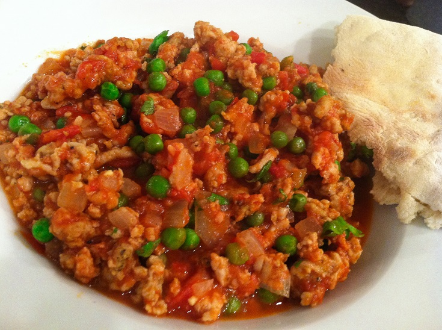

Ingredients:
1)500 gms Minced Meat (Keema)
2)250 gms Peas (Matar)
3)1/2 tsp Turmeric (Haldi)
4)1 tsp Red Chili Powder (Lal Mirchi)
5)1 " chopped Ginger (Adrak)
6)3 Green chilli (Hari mirch)
7)1 tsp Garam Masala
8)3 large Brown Cardamom (Elaichi Moti) crushed
9)1 cup fresh and thick curd Curd (Dahi)
10)1 pinch of Asafetida (Hing)
11)4 tblsp Clarified Butter (Ghee)
12)Coriander Leaves (Dhania)
How to make keema matar:
1)Heat ghee and fry asafetida.
2)Add salt, green chillies, turmeric and coriander powder.
3)Add cardomoms and garam masala and simmer.
4)Then add a cup of hot water.
5)Cover and cook till the water dries and peas and keema are done.
6)Garnish with coriander leaves.
Serve hot with nan or chapatis.